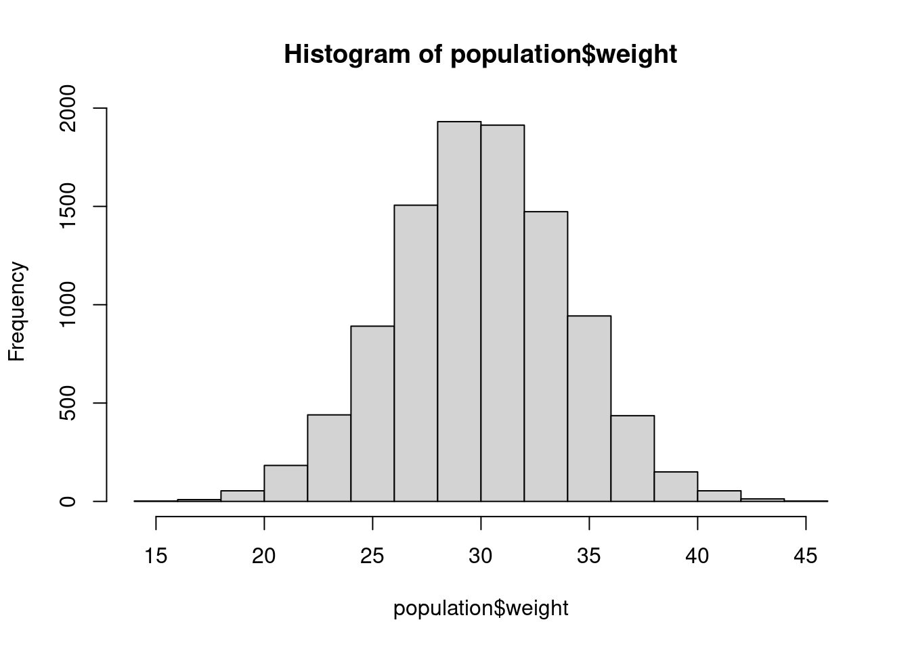
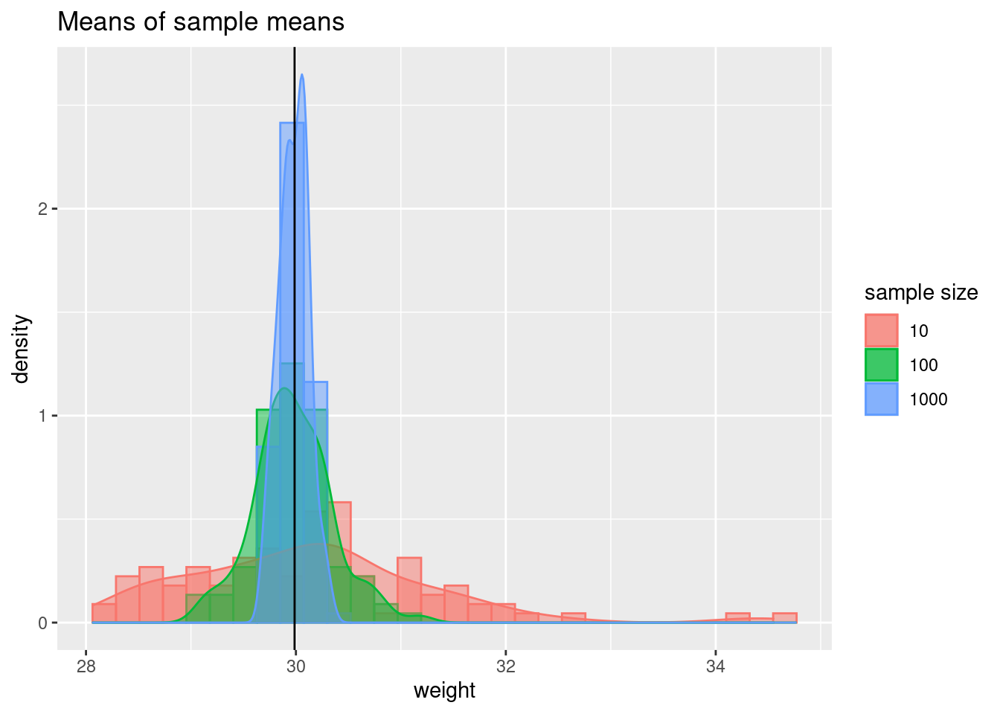
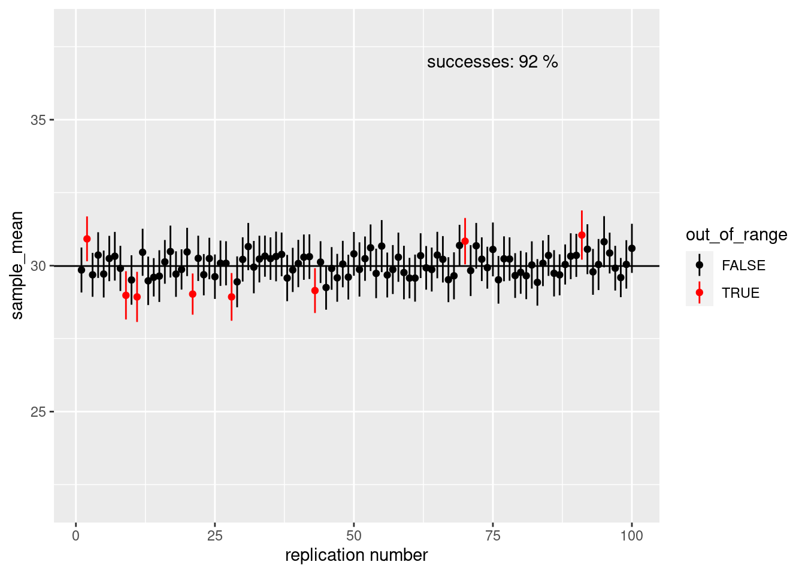

Note: This is a work in progress, please let me know if you notice any mistakes or anything unclear.
Let’s create a population of a new species, the wug
We’ll set the population size to 10,000. These are all of the (adult) wugs in the world.
pop_size <- 10000
weight_mean <- 30
weight_sd <- 4
population <- data.frame(
wug_id = seq(pop_size),
weight = rnorm(pop_size, mean = weight_mean, sd = weight_sd)
)hist(population$weight)
mean(population$weight)## [1] 29.9875sd(population$weight)## [1] 3.99682range(population$weight)## [1] 14.62250 44.59862However, when you collect data, you normally don’t have access to an entire population, Hawaiian Crows notwithstanding. So, what do we do? Sample!
Sampling is fundamental to understanding statistics. Because we can’t gather data on the whole population, we have to take samples from the population and make inferences based on the sample statistics.
How do we know how many individuals we need? This is not a trivial issue, in fact, it’s probably the most important question you will face as a researcher. It’s also one of the most difficult to answer. We’ll address this question several times during the course. (Lisa will also discuss sampling in the Experimental Design class).
But let’s try to get an intuitive notion of sampling theory. Because we generated the wug data, we know the true population mean: 29.9875002.
Let’s sample one individual. To do this, let’s use the
sample_n() function in the dplyr package
library(dplyr)##
## Attaching package: 'dplyr'## The following objects are masked from 'package:stats':
##
## filter, lag## The following objects are masked from 'package:base':
##
## intersect, setdiff, setequal, unionpopulation %>%
sample_n(1)## wug_id weight
## 1 2678 37.97742Note: If you haven’t installed dplyr yet, you can use
the sample() function in “base” R.
index <- sample(x = 1:nrow(population), size = 1)
population[index, ]## wug_id weight
## 2129 2129 29.10427Does your individual weigh the same as the mean? There is some randomness with sampling, most of you probably got something around 29.9875002, but anything from 14.6225032 to 44.5986158 is possible.
What happens if we take a lot of individuals? And then we take the mean of their weights?
sample_size <- 10
wug_sample <- population %>%
sample_n(sample_size)
mean(wug_sample$weight)## [1] 29.9335# or
#index <- sample(x = 1:nrow(population), size = sample_size)
#wug_sample <- population[index, ]More than likely, you got a value that was pretty close to the true population mean. This is the sample mean.
If we increase the population size even further, we will most likely get a sample mean that is even closer to the population mean.
sample_size <- 1000
wug_sample <- population %>%
sample_n(sample_size)
mean(wug_sample$weight)## [1] 29.95616# or
#index <- sample(x = 1:nrow(population), size = sample_size)
#wug_sample <- population[index, ]To illustrate this, I’ve written some code that will repeat this sampling method 100 times. Larger sample sizes should be, on average, closer to the true mean.
The code in this less will get quite a bit more difficult. Don’t worry about being able to reproduce this, even after we finish all three lessons. (It was also done in a hurry, so the next version of this code will be more thought out.)
library(ggplot2)
##
wug_sample <- function(sample_size){
# Do 100 iterations of sampling
sample_means <- NULL
for(i in 1:100){
index <- sample(x = 1:nrow(population),
size = sample_size)
wug_sample <- population[index, ]
sample_means[i] <- mean(wug_sample$weight)
}
wug_df <- data.frame(
sample_size = rep(x = sample_size, length.out = 100 ),
weight = sample_means
)
return(wug_df)
}
samp_comp <- rbind(wug_sample(sample_size = 1000),
wug_sample(sample_size = 100),
wug_sample(sample_size = 10))
ggplot(data = samp_comp, aes(weight,
fill = as.factor(sample_size),
color = as.factor(sample_size))) +
geom_histogram(aes(y = ..density..),
alpha = 0.5, position = 'identity') +
geom_density(alpha = 0.5) +
ggtitle("Means of sample means")+
geom_vline(xintercept = mean(population$weight)) +
scale_fill_discrete(name = 'sample size') +
scale_color_discrete(name = 'sample size')## `stat_bin()` using `bins = 30`. Pick better value with `binwidth`.
As your sample size increases, there is less variance in the sample means. If you repeat data collection 100 times and each time you have a sample size of 10, you will see the sample means from ~ 28 to 33. If you sample sizes are 1000, sample means stay within 0.5 kg of the true mean.
Of course in reality, you will likely never see sample sizes of 1000, you will collect data only once, and you won’t know the true population statistics. So, how do you figure out the true population mean? Well, you use the sample size calculated from your data as the estimate of the population mean
How do you know if you can trust that estimate? More than likely, the estimate of the population mean will not be the same as the true population mean, but we can use our sample mean and sample standard deviation to calculate a 95% confidence interval for the mean.
confint_int <- function(x, n, level = .95){
percentile <- 1 - (1 - level)/2
degree_of_freedom <- n - 1
percentile_of_tdist <- qt(p =percentile , df = n -1)
standard_error_mean <- sd(x)/sqrt(n)
lower_bound <- mean(x) - (percentile_of_tdist * standard_error_mean)
upper_bound <- mean(x) + (percentile_of_tdist * standard_error_mean)
return(c(lower_bound, upper_bound))
}
sample_size <- 10
index <- sample(x = 1:nrow(population),
size = sample_size)
wug_sample <- population[index, ]
ci <- confint_int(x = wug_sample$weight, n = sample_size)
ci## [1] 28.00904 32.54592There is a 95% chance that the true mean lies between 28.009043 and 32.5459172.
ci_plot <- function(sample_size) {
ci_data <- data.frame(
'sample_mean' = numeric(),
'lower_ci' = numeric(),
'upper_ci' = numeric(),
'out_of_range' = logical()
)
for (i in 1:100) {
#sample_size <- 10
index <- sample(x = 1:nrow(population),
size = sample_size)
wug_sample <- population[index,]
ci <-confint_int(x = wug_sample$weight, n = sample_size)
ci_data[i, 1] <- mean(wug_sample$weight)
ci_data[i, 2] <- ci[1]
ci_data[i, 3] <- ci[2]
if (mean(population$weight) > ci[2] |
mean(population$weight) < ci[1]) {
ci_data[i, 4] <- TRUE
} else{
ci_data[i, 4] <- FALSE
}
}
successes <-
sum(ci_data$out_of_range == F) / nrow(ci_data) * 100
ggplot(ci_data,
aes(x = 1:nrow(ci_data),
y = sample_mean,
color = out_of_range)) +
geom_point() +
geom_linerange(aes(ymin = lower_ci, ymax = upper_ci)) +
ylim(c(22, 38)) +
xlab('replication number') +
geom_hline(yintercept = mean(population$weight)) +
scale_color_manual(values = c('black', 'red')) +
annotate(
geom = 'text',
x = 75,
y = 37,
label = paste("successes:", successes, "%")
)
}ci_plot(sample_size = 10)ci_plot(sample_size = 100)
So far, we’ve glossed over quite a few details. Don’t worry,
understanding statistics will take time and practice. But notice a few
functions we used: rnorm(), qt(). What in the
world are these? In the first, the “norm” in the function name refers to
“normal”, that is, the normal distribution. The “t” in the
second function name refers to the t distribution. A
distribution is usually data organized from the smallest value to the
largest. We’ll discuss distributions and probability in the next
lesson.
================================================================================
Last update on 2020-10-19
sessionInfo()## R version 4.2.1 (2022-06-23)
## Platform: x86_64-pc-linux-gnu (64-bit)
## Running under: Ubuntu 20.04.5 LTS
##
## Matrix products: default
## BLAS: /usr/lib/x86_64-linux-gnu/blas/libblas.so.3.9.0
## LAPACK: /usr/lib/x86_64-linux-gnu/lapack/liblapack.so.3.9.0
##
## locale:
## [1] LC_CTYPE=en_US.UTF-8 LC_NUMERIC=C
## [3] LC_TIME=de_AT.UTF-8 LC_COLLATE=en_US.UTF-8
## [5] LC_MONETARY=de_AT.UTF-8 LC_MESSAGES=en_US.UTF-8
## [7] LC_PAPER=de_AT.UTF-8 LC_NAME=C
## [9] LC_ADDRESS=C LC_TELEPHONE=C
## [11] LC_MEASUREMENT=de_AT.UTF-8 LC_IDENTIFICATION=C
##
## attached base packages:
## [1] stats graphics grDevices utils datasets methods base
##
## other attached packages:
## [1] ggplot2_3.3.6 dplyr_1.0.10
##
## loaded via a namespace (and not attached):
## [1] pillar_1.8.1 bslib_0.4.0 compiler_4.2.1 jquerylib_0.1.4
## [5] highr_0.9 tools_4.2.1 digest_0.6.29 jsonlite_1.8.0
## [9] evaluate_0.16 lifecycle_1.0.1 tibble_3.1.8 gtable_0.3.0
## [13] pkgconfig_2.0.3 rlang_1.0.5 cli_3.3.0 DBI_1.1.2
## [17] rstudioapi_0.14 yaml_2.3.5 xfun_0.32 fastmap_1.1.0
## [21] withr_2.5.0 stringr_1.4.1 knitr_1.40 generics_0.1.3
## [25] vctrs_0.4.1 sass_0.4.2 grid_4.2.1 tidyselect_1.1.2
## [29] glue_1.6.2 R6_2.5.1 fansi_1.0.3 rmarkdown_2.16
## [33] farver_2.1.0 purrr_0.3.4 magrittr_2.0.3 scales_1.2.0
## [37] htmltools_0.5.3 assertthat_0.2.1 colorspace_2.0-3 labeling_0.4.2
## [41] utf8_1.2.2 stringi_1.7.8 munsell_0.5.0 cachem_1.0.6================================================================================
Copyright © 2022 Dan C. Mann. All rights reserved.